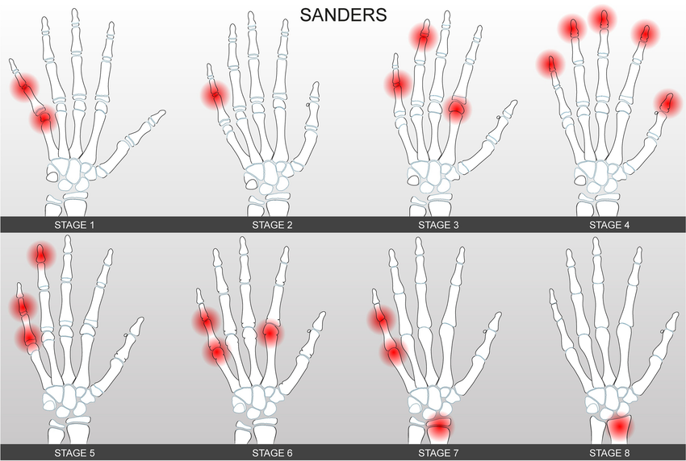

Adapted from: Utenza Editor. (2024, July 23). Sanders staging: the pros and cons? ISICO.
1) Description of Measurement
The Sanders Maturity Score is a hand radiograph–based skeletal maturity system developed to more precisely estimate remaining growth potential in children and adolescents, particularly those with scoliosis. It evaluates the pattern of epiphyseal and physeal maturation in the hand and wrist and directly tracks progression through the peak height velocity (PHV) period.
2) Instructions to Measure
3) Normal vs. Pathologic Ranges
Sanders stages represent normal skeletal development phases. Their importance lies in growth-risk stratification.
4) Important References
Sanders JO, Khoury JG, Kishan S, Browne RH, Mooney JF 3rd, Arnold KD, McConnell SJ, Bauman JA, Finegold DN. Predicting scoliosis progression from skeletal maturity: a simplified classification during adolescence. J Bone Joint Surg Am. 2008 Mar;90(3):540-53. doi: 10.2106/JBJS.G.00004. PMID: 18310704.
Sitoula P, Verma K, Holmes L Jr, Gabos PG, Sanders JO, Yorgova P, Neiss G, Rogers K, Shah SA. Prediction of Curve Progression in Idiopathic Scoliosis: Validation of the Sanders Skeletal Maturity Staging System. Spine (Phila Pa 1976). 2015 Jul 1;40(13):1006-13. doi: 10.1097/BRS.0000000000000952. PMID: 26356067.
Yucekul A, Yilgor C, Demirci N, Gurel IE, Orhun O, Karaman MI, Durbas A, Lim HS, Zulemyan T, Yavuz Y, Alanay A. A comparative analysis of axial and appendicular skeletal maturity staging systems through assessment of longitudinal growth and curve modulation after VBT surgery. Eur Spine J. 2025 Jan;34(1):251-262. doi: 10.1007/s00586-024-08488-z. Epub 2024 Nov 19. PMID: 39560722.
Scoliosis Research Society. Adolescent idiopathic scoliosis: a handbook for patients [Internet]. Milwaukee (WI): Scoliosis Research Society; [date unknown]. Available from: https://www.srs.org/Files/Patient-Brochures/Patient.Adolescent_Idiopathic_Scoliosis_Handbook_for_Patients.pdf. Accessed 2025 Dec 30.
5) Other info....
The Sanders Maturity Score is valuable as it indicates peak height velocity, the best predictor of rapid scoliosis progression. The Risser sign, reflecting later skeletal maturity, may underestimate growth potential early in puberty.